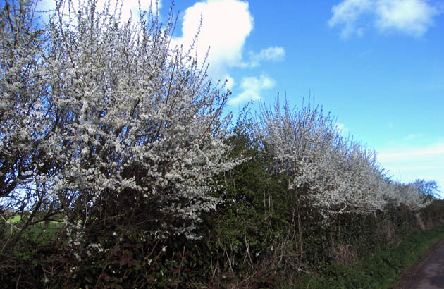
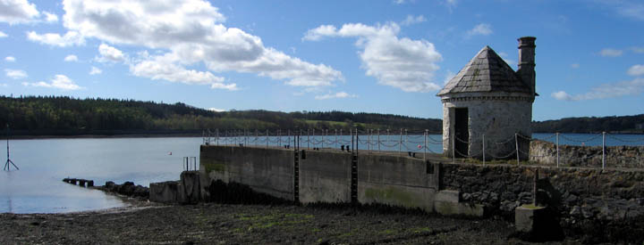
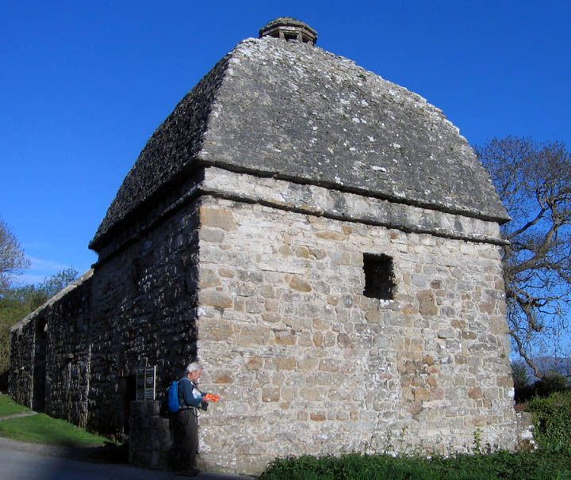

Anglesey Coastal Path
April/May 2015
Llanfairpwll to Penmon
| Next | Intro |
|
Since the walk is circular, one can begin anywhere on the loop. With great excitement, we started at Moel y Don, not far from Llanfairpwll. A few moments later we passed this sunken boat.
|
| The hawthorn was in bloom, as
were the primroses. |
 |
The route goes inland for a few miles in order to go around the large estate of Plas Newydd, the home of the Marquess of Anglesey. But a bonus of going inland was that we soon came to a Neolithic burial mound, Bryn Celli Ddu. Like Stonehenge in England, Newgrange in Ireland, and Maeshowe on Orkney, it's oriented so that the rising sun on the longest day of the year shines down the passageway. We squatted and made our way into the central chamber.
After another couple of miles we were back at the water's edge. This is the Menai Strait, separating Anglesey from mainland Wales. Our notes said that this structure below was for storage of munitions, with round sides so that in case of an explosion the roof would blow off and the sides would survive.

A bit of rocky shore brought us to a statue of Lord Nelson. This was sculpted by a son of the Marquis of Anglesey.
We soon turned inland, toward St. Mary's Church in Llanfairpwll. Llanfairpwll is of course well-known for its extravagantly long full name: Llanfairpwllgwyngyllgogerychwyrndrobwllllantysiliogogogoch. There are many towns in Wales with names beginning "Llanfair", because it means "St. Mary's", so they need something else to distinguish them. This, however, is excessive!
Within a short distance, we found ourselves going under the Britannia Bridge. This was originally designed for the railroad, and it had been a tubular bridge. Trains went through big rectangular box-like tubes. But in 1970 teenagers sneaked in and lighted some paper to be able to see in the darkness. They accidentally dropped the paper, starting a horrific fire that destroyed the tubes. The rebuilt bridge is no longer tubular. It has two levels, the lower for trains and the upper for cars.
It's only about a mile to the other bridge across the Menai Strait. This one was earlier, built by Thomas Telford beginning in 1819, much larger than any other suspension bridge at the time it was built.
We walked under this bridge, too:
The small town at the end of the bridge is Menai Bridge, and from there we went inland (and uphill) for five miles or so, through the village of Llandegfan and then down to Beaumaris. Here's the approach to Beaumaris along the seafront:
And at the far end of the town is Beaumaris Castle, the last of the Edward I (boo, hiss) castles built to subdue the Welsh.
A mile beyond Beaumaris, after crossing a pleasant grassy hillside where lots of people were out enjoying the sunny Sunday afternoon, we dropped down again to the coast. There was a choice here. If it's not high tide one can walk along the shore, and we thought we would be all right. (Our book does say in italics "Do not attempt to walk along the shore to Trwyn y Penrhyn within one hour either side of high tide" because the tide will reach up to the cliffs.) When we started along the shore we came to a family group sitting on the rocks. They advised us against trying the shore walk. (Advised strongly, in fact.) So we went back inland. One advantage was that a couple of miles along on our detour we could visit the ruins of a castle, Castell Lleiniog. This was originally a motte and bailey castle built in 1090 by one of William the Conqueror's buddies. Three years later, the Welsh captured it, and thereby kept the Normans out of north Wales for the next 100 years. What's showing now is a later structure, a stone fort, built on top of the motte.
By the time we arrived at Penmon Priory, it was well past their 4:00 closing, but a woman came out of the next-door house and asked whether we'd like to go in. She kindly opened the priory for us.
St Seriol set up a monastery here, in the 6th century, when many such religious communities were being formed in the Celtic world. The two crosses which were at the gate of the monastery survive, but the church was destroyed by a Viking raid in 971. The stone priory is from the 13th century, and was part of Llywelyn the Great's support of the Augustinian Order.
| This is one of the high crosses that had been at the gate, now brought inside for protection. | |
|
Nearby there's a dovecote. When Henry VIII dissolved the monasteries in 1538, Penmon was given to a prominent local family. They built the dovecote around 1600, to supply meat and eggs for their estate. The dovecote has nesting cublcles for about 930 pigeons. The pigeons could fly in and out through an opening in the roof.

Our final sight for the day was Penmon Point, with its lighthouse and Puffin Island beyond.
An artist, Anthony Garratt, has made large weather-proof paintings of four scenes around the coast. These paintings have been placed at the appropriate spots and will remain there through the summer.
| Next | Intro |